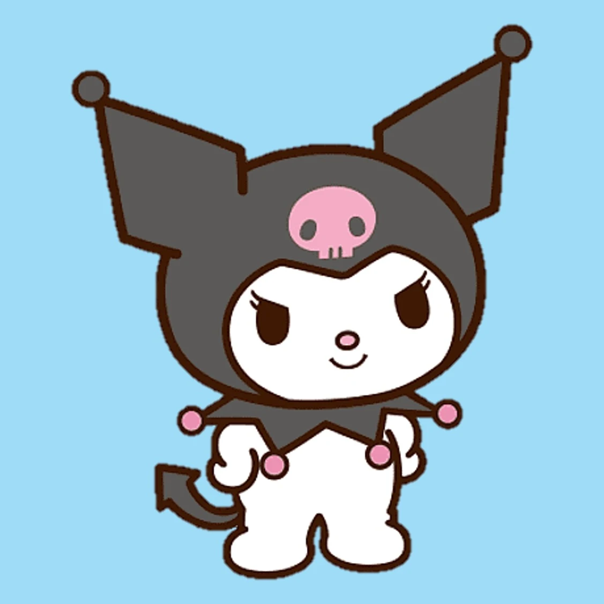
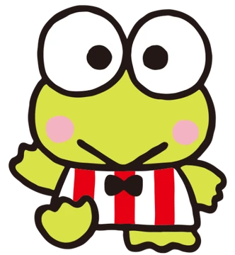
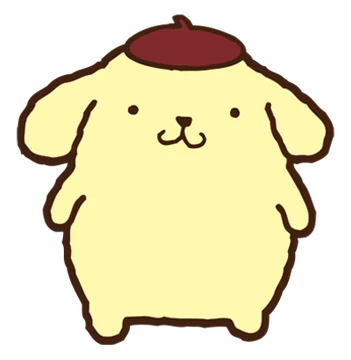
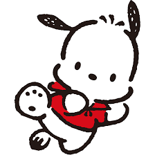
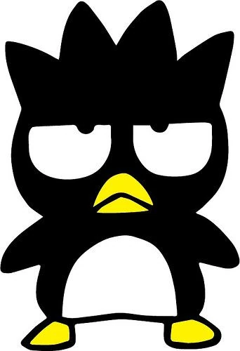

Hello Kitty, cuyo nombre real es Kitty White, es un personaje animado creado por la empresa japonesa Sanrio y diseñado por Yuko Yamaguchi. Nació el 1 de noviembre de 1974 en Inglaterra.

Kuromi es un personaje ficticio creado en el año 2005 por la compañía japonesa Sanrio. Es una amiga de Hello Kitty y su mejor amiga es My Melody. Ella es presentada como la contraparte oscura de My Melody, con un pasado rebelde y un lado femenino oculto.

My Melody es un adorable personaje de conejo blanco creado por Sanrio en 1975, inspirado en Caperucita Roja. Destaca por su clásica capucha rosa o roja y su personalidad dulce y honesta. Ella vive en el Bosque de Maryland con sus amigos y su pasatiempo favorito es hornear galletas.

Keroppi es un carismático personaje con forma de rana creado por la compañía japonesa Sanrio en 1988. Su nombre completo es Kerokerokeroppi y es conocido mundialmente por formar parte del universo de Hello Kitty. Vivaz y aventurero, habita junto a su familia en el ficticio Estanque Donut.

Pompompurin es un icónico personaje de la compañía japonesa Sanrio creado en 1996. Se trata de un tierno perro de raza Golden Retriever reconocible por su color amarillo claro y su inseparable boina marrón sobre la cabeza.

Pochacco es un tierno personaje de la compañía japonesa Sanrio, diseñado como un cachorro blanco con icónicas orejas negras y caídas. Fue creado en 1989 por Minoru Onoue y se mantiene como uno de los personajes más populares del universo Kawaii.

Cinnamoroll es un popular personaje de la compañía japonesa Sanrio, creado en 2001 por la diseñadora Miyuki Okumura. Es un pequeño perro de color blanco con orejas largas que le permiten volar, ojos azules, mejillas rosadas y una cola rizada que se parece a un rollo de canela.

Badtz-Maru es uno de los personajes más icónicos y rebeldes de Sanrio, lanzado en 1993. A diferencia de los personajes tradicionalmente tiernos y dulces de la marca, él destaca por su actitud traviesa, su expresión de pocos amigos y su personalidad sarcástica.

© 2026 SANRIO CO., LTD. Todos los derechos reservados.